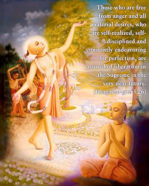
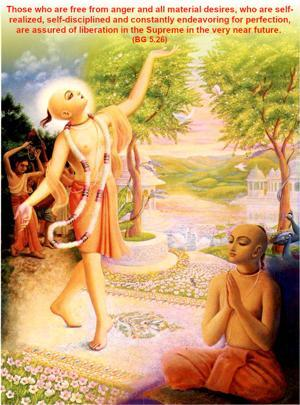
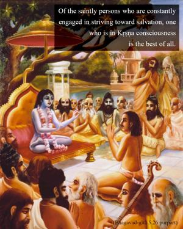
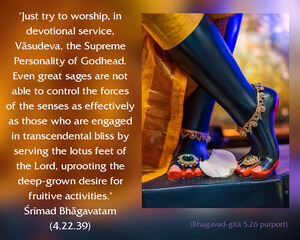
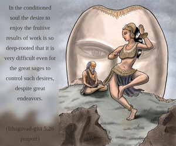
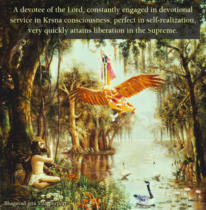
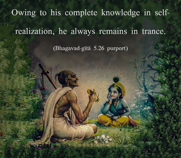
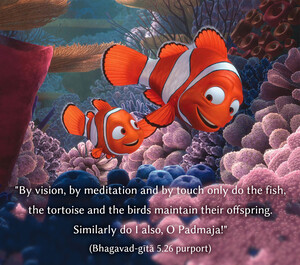
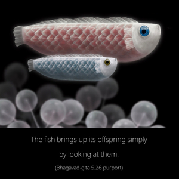

Those who are free from anger and all material desires, who are self-realized, self-disciplined and constantly endeavoring for perfection, are assured of liberation in the Supreme in the very near future.









Of the saintly persons who are constantly engaged in striving toward salvation, one who is in Kṛṣṇa consciousness is the best of all. The Bhāgavatam (4.22.39) confirms this fact as follows:
yat-pāda-paṅkaja-palāśa-vilāsa-bhaktyā
karmāśayaṁ grathitam udgrathayanti santaḥ
tadvan na rikta-matayo yatayo ’pi ruddha-
sroto-gaṇās tam araṇaṁ bhaja vāsudevam
“Just try to worship, in devotional service, Vāsudeva, the Supreme Personality of Godhead. Even great sages are not able to control the forces of the senses as effectively as those who are engaged in transcendental bliss by serving the lotus feet of the Lord, uprooting the deep-grown desire for fruitive activities.”
In the conditioned soul the desire to enjoy the fruitive results of work is so deep-rooted that it is very difficult even for the great sages to control such desires, despite great endeavors. A devotee of the Lord, constantly engaged in devotional service in Kṛṣṇa consciousness, perfect in self-realization, very quickly attains liberation in the Supreme. Owing to his complete knowledge in self-realization, he always remains in trance. To cite an analogous example of this:
darśana-dhyāna-saṁsparśair
matsya-kūrma-vihaṅgamāḥ
svāny apatyāni puṣṇanti
tathāham api padma-ja
“By vision, by meditation and by touch only do the fish, the tortoise and the birds maintain their offspring. Similarly do I also, O Padmaja!”
The fish brings up its offspring simply by looking at them. The tortoise brings up its offspring simply by meditation. The eggs of the tortoise are laid on land, and the tortoise meditates on the eggs while in the water. Similarly, the devotee in Kṛṣṇa consciousness, although far away from the Lord’s abode, can elevate himself to that abode simply by thinking of Him constantly – by engagement in Kṛṣṇa consciousness. He does not feel the pangs of material miseries; this state of life is called brahma-nirvāṇa, or the absence of material miseries due to being constantly immersed in the Supreme.